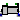

Modelica.Mechanics.MultiBody.Joints.Internal.InitPosition
Modelica.Mechanics.MultiBody.Joints.Internal.InitPositionComponents used for analytic solution of kinematic loops (use only if you know what you are doing)
The models in this package should not be used by the user. They are designed to build up other models in the MultiBody library and some of them cannot be used in an arbitrary way and require particular knowledge how to set the options in the parameter menu. Don't use the models of this package.
Extends from Modelica.Icons.InternalPackage (Icon for an internal package (indicating that the package should not be directly utilized by user)).
| Name | Description |
|---|---|
| RevoluteWithLengthConstraint | Revolute joint where the rotation angle is computed from a length constraint (1 degree-of-freedom, no potential state) |
|  PrismaticWithLengthConstraint | Prismatic joint where the translational distance is computed from a length constraint (1 degree-of-freedom, no potential state) |
| RollingConstraintVerticalWheel | Rolling constraint for wheel that is always perpendicular to x-y plane |
| InitPosition | Internal model to initialize r_rel_a for Joints.FreeMotionScalarInit |
| InitAngle | Internal model to initialize the angels for Joints.FreeMotionScalarInit |
| InitAngularVelocity | Internal model to initialize w_rel_b for Joints.FreeMotionScalarInit |
Revolute joint where the rotation angle is computed from a length constraint (1 degree-of-freedom, no potential state)
Joint where frame_b rotates around axis n which is fixed in frame_a. The two frames coincide when "phi + phi_offset = 0", where "phi_offset" is a parameter with a zero default and "phi" is the rotation angle.
This variant of the revolute joint is designed to work together with a length constraint in a kinematic loop. This means that the angle of the revolute joint, phi, is computed such that the length constraint is fulfilled.
Usually, this joint should not be used by a user of the MultiBody library. It is only provided to built-up the Modelica.Mechanics.MultiBody.Joints.Assemblies.JointXYZ joints.
In releases before version 3.0 of the Modelica Standard Library, it was possible to activate the torque projection equation (= cut-torque projected to the rotation axis must be identical to the drive torque of flange axis) via parameter axisTorqueBalance. This is no longer possible, since otherwise this model would not be "balanced" (= same number of unknowns as equations). Instead, when using this model in version 3.0 and later versions, the force in the length constraint component (Joints.SphericalSpherical or Joints.UniversalSpherical) must be calculated such that the driving torque in direction of the rotation axis is (RC shall be the name of the instance of RevoluteWithLengthConstraint):
0 = RC.axis.tau + RC.e*RC.frame_b.t;
If this equation is used, usually the force in the length constraint and the second derivative of the revolute angle will be part of a linear algebraic system of equations. In some cases it is possible to solve this system of equations locally, i.e., provide the rod force directly as function of the revolute constraint torque. In any case, this projection equation or an equivalent one has to be provided via variable "constraintResidue" in the "Advanced" menu of "Joints.SphericalSpherical" or "Joints.UniversalSpherical".
Extends from Modelica.Mechanics.MultiBody.Interfaces.PartialTwoFrames (Base model for components providing two frame connectors + outer world + assert to guarantee that the component is connected).
| Name | Description |
|---|---|
| animation | = true, if animation shall be enabled |
| lengthConstraint | Fixed length of length constraint [m] |
| n | Axis of rotation resolved in frame_a (= same as in frame_b) [1] |
| phi_offset | Relative angle offset (angle = phi + from_deg(phi_offset)) [deg] |
| phi_guess | Select the configuration such that at initial time |phi - from_deg(phi_guess)| is minimal [deg] |
| Animation | |
| if animation = true | |
| cylinderLength | Length of cylinder representing the joint axis [m] |
| cylinderDiameter | Diameter of cylinder representing the joint axis [m] |
| cylinderColor | Color of cylinder representing the joint axis |
| specularCoefficient | Reflection of ambient light (= 0: light is completely absorbed) |
| Name | Description |
|---|---|
| frame_a | Coordinate system a fixed to the component with one cut-force and cut-torque |
| frame_b | Coordinate system b fixed to the component with one cut-force and cut-torque |
| axis | 1-dim. rotational flange that drives the joint |
| bearing | 1-dim. rotational flange of the drive bearing |
| position_a[3] | Position vector from frame_a to frame_a side of length constraint, resolved in frame_a of revolute joint [m] |
| position_b[3] | Position vector from frame_b to frame_b side of length constraint, resolved in frame_b of revolute joint [m] |
Prismatic joint where the translational distance is computed from a length constraint (1 degree-of-freedom, no potential state)
Joint where frame_b is translated along axis n which is fixed in frame_a. The two frames coincide when "s + s_offset = 0", where "s_offset" is a parameter with a zero default and "s" is the relative distance.
This variant of the prismatic joint is designed to work together with a length constraint in a kinematic loop. This means that the relative distance "s" of the joint is computed such that the length constraint is fulfilled.
Usually, this joint should not be used by a user of the MultiBody library. It is only provided to built-up the Modelica.Mechanics.MultiBody.Joints.Assemblies.JointXYZ joints.
In releases before version 3.0 of the Modelica Standard Library, it was possible to activate the force projection equation (= cut-force projected to the translation axis must be identical to the driving force of flange axis) via parameter axisForceBalance. This is no longer possible, since otherwise this model would not be "balanced" (= same number of unknowns as equations). Instead, when using this model in version 3.0 and later versions, the force in the length constraint component (Joints.SphericalSpherical or Joints.UniversalSpherical) must be calculated such that the driving force in direction of the translation axis is (RC shall be the name of the instance of PrismaticWithLengthConstraint):
0 = RC.axis.f + RC.e*RC.frame_b.f;
If this equation is used, usually the force in the length constraint and the second derivative of the prismatic distance will be part of a linear algebraic system of equations. In some cases it is possible to solve this system of equations locally, i.e., provide the rod force directly as function of the prismatic constraint force. In any case, this projection equation or an equivalent one has to be provided via variable "constraintResidue" in the "Advanced" menu of "Joints.SphericalSpherical" or "Joints.UniversalSpherical".
Extends from Modelica.Mechanics.MultiBody.Interfaces.PartialTwoFrames (Base model for components providing two frame connectors + outer world + assert to guarantee that the component is connected).
| Name | Description |
|---|---|
| animation | = true, if animation shall be enabled |
| length | Fixed length of length constraint [m] |
| n | Axis of translation resolved in frame_a (= same as in frame_b) [1] |
| s_offset | Relative distance offset (distance between frame_a and frame_b = s(t) + s_offset) [m] |
| s_guess | Select the configuration such that at initial time |s(t0)-s_guess| is minimal [m] |
| Animation | |
| if animation = true | |
| boxWidthDirection | Vector in width direction of box, resolved in frame_a [1] |
| boxWidth | Width of prismatic joint box [m] |
| boxHeight | Height of prismatic joint box [m] |
| boxColor | Color of prismatic joint box |
| specularCoefficient | Reflection of ambient light (= 0: light is completely absorbed) |
| Name | Description |
|---|---|
| frame_a | Coordinate system a fixed to the component with one cut-force and cut-torque |
| frame_b | Coordinate system b fixed to the component with one cut-force and cut-torque |
| axis | 1-dim. translational flange that drives the joint |
| bearing | 1-dim. translational flange of the drive bearing |
| position_a[3] | Position vector from frame_a to frame_a side of length constraint, resolved in frame_a of prismatic joint [m] |
| position_b[3] | Position vector from frame_b to frame_b side of length constraint, resolved in frame_b of prismatic joint [m] |
Rolling constraint for wheel that is always perpendicular to x-y plane
Joint for a wheel rolling on the x-y plane of the world frame intended for an idealized wheelset. To meet this objective, the wheel always runs upright and enables no slip in the longitudinal direction of the wheel/ground contact.
On the contrary, the wheel can optionally slip in the lateral direction which is reasonable for the wheelset where just one of the wheels should be laterally constrained.
The frame frame_a is placed in the intersection of the wheel spin axis with the wheel middle plane and rotates with the wheel itself. A wheel body collecting the mass and inertia should be connected to this frame.
To work properly, the gravity acceleration vector g of the world must point in the negative z-axis, i.e.
inner Modelica.Mechanics.MultiBody.World world(n={0,0,-1});
| Name | Description |
|---|---|
| radius | Wheel radius [m] |
| lateralSlidingConstraint | = true, if lateral sliding constraint taken into account, = false if lateral force = 0 (needed to avoid overconstraining if two ideal rolling wheels are connect on one axis) |
| Name | Description |
|---|---|
| frame_a | Frame fixed in wheel center point. x-Axis: upwards, y-axis: along wheel axis |
Modelica.Mechanics.MultiBody.Joints.Internal.InitPositionInternal model to initialize r_rel_a for Joints.FreeMotionScalarInit
Compute relative position vector r_rel_a from a position vector r_a_0 to a position vector r_b_0, resolved in frame given by an orientation object R_a.
Extends from Modelica.Blocks.Icons.Block (Basic graphical layout of input/output block).
| Name | Description |
|---|---|
| r_a_0[3] | [m] |
| r_b_0[3] | [m] |
| R_a |
| Name | Description |
|---|---|
| r_rel_a[3] | [m] |
Internal model to initialize the angels for Joints.FreeMotionScalarInit
Compute three rotational angles angle for a given rotational sequence sequence_start from a relative orientation from frame_a to frame_b.
Extends from Modelica.Blocks.Icons.Block (Basic graphical layout of input/output block).
| Name | Description |
|---|---|
| sequence_start | Sequence of angle rotations |
| Name | Description |
|---|---|
| frame_a | |
| frame_b | |
| angle[3] | [rad] |
Modelica.Mechanics.MultiBody.Joints.Internal.InitAngularVelocityInternal model to initialize w_rel_b for Joints.FreeMotionScalarInit
Compute relative angular velocity w_rel_b of an orientation object R_b relative to an orientation object R_a, resolved in orientation object R_b, i.e.
w_b_b = w_a_b + w_rel_b,
where
w_b_b ...... absolute angular velocity of frame_b resolved in frame_b, w_a_b ...... absolute angular velocity of frame_a resolved in frame_b, w_rel_b .... relative angular velocity resolved in frame_b.
Extends from Modelica.Blocks.Icons.Block (Basic graphical layout of input/output block).
| Name | Description |
|---|---|
| R_a | |
| R_b |
| Name | Description |
|---|---|
| w_rel_b[3] | [rad/s] |